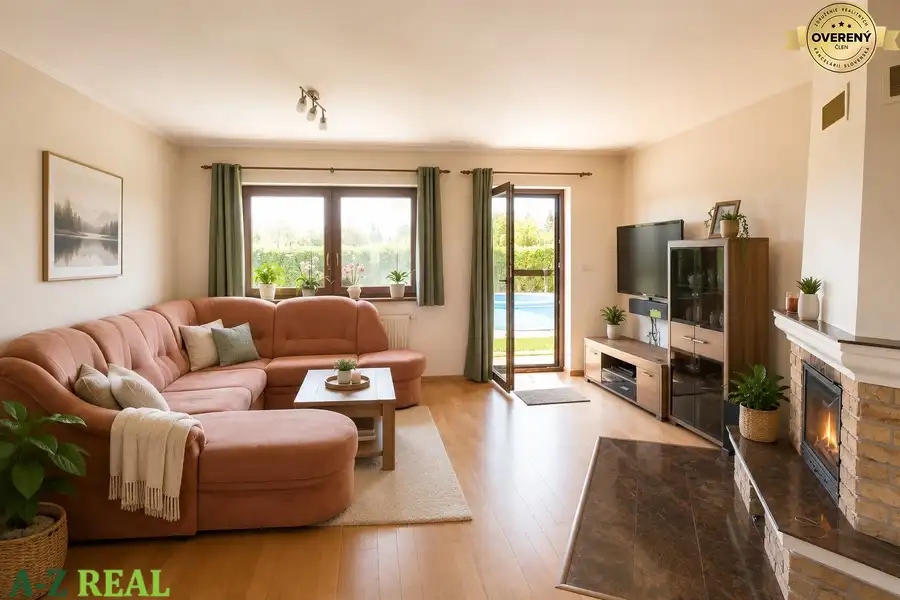
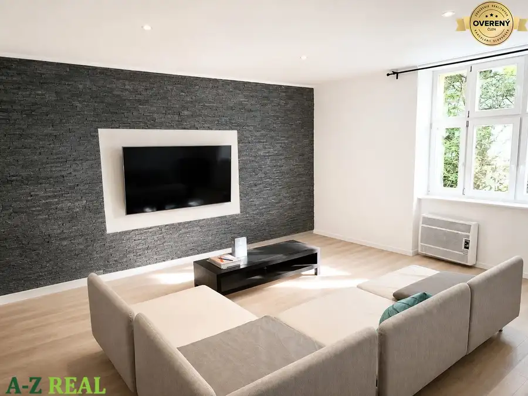
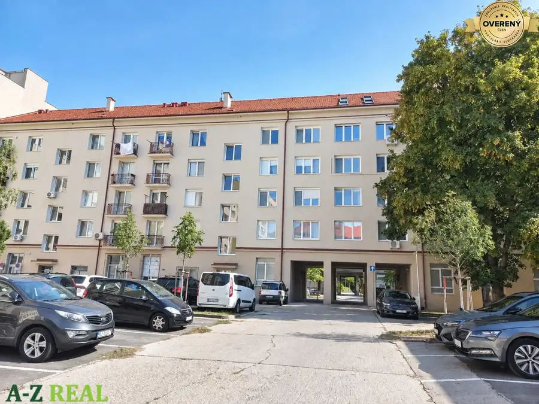
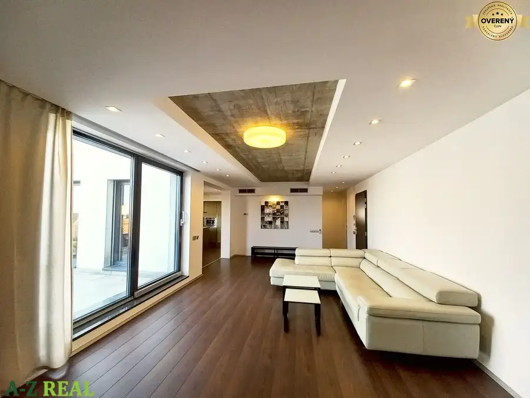
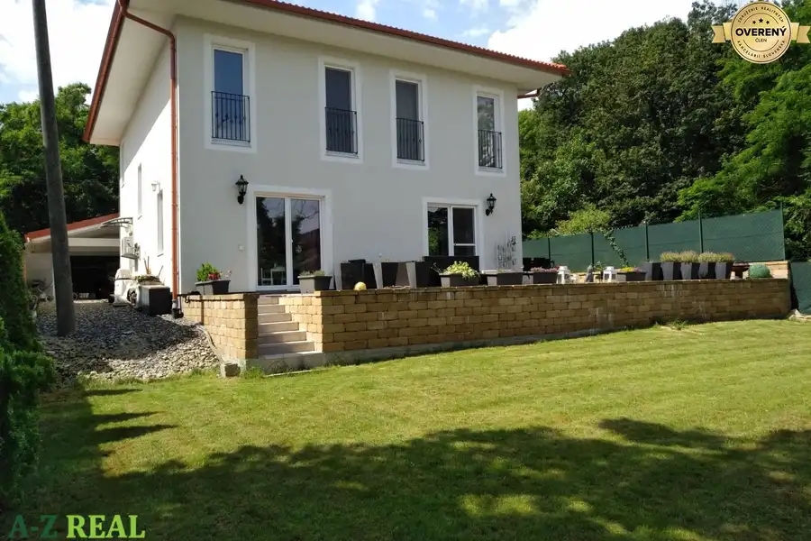
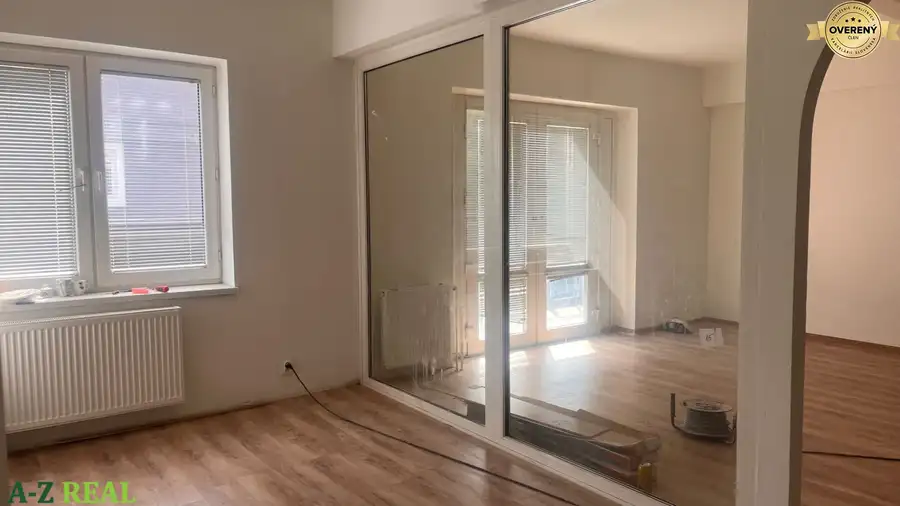
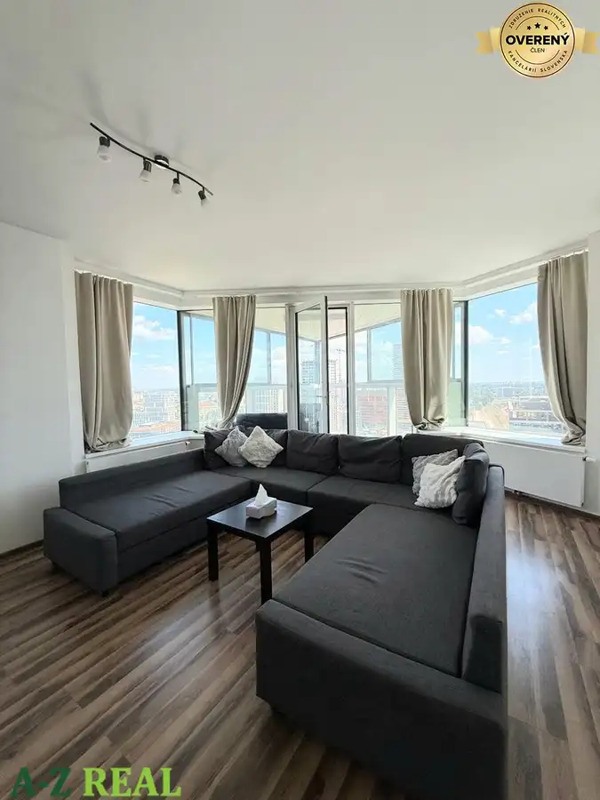

Aktuálna ponuka
Nehnuteľnosti, ktoré ponúkam
11 nehnuteľností na predaj a prenájom. Vyberte typ, alebo napíšte lokalitu.
11 z 11 ponúk
 Záhrady2
29 500 €Predaj záhrady so záhradnou chatkou okres Partizánske -Návojovce
Navojovce, Návojovce
382 m²
Ponúkam na predaj záhradnú chatku s pozemkom o rozlohe 382 m² v záhradnej oblasti Návojovce (okres Partizánske). Nehnuteľnosť sa nachádza na…
Záhrady2
29 500 €Predaj záhrady so záhradnou chatkou okres Partizánske -Návojovce
Navojovce, Návojovce
382 m²
Ponúkam na predaj záhradnú chatku s pozemkom o rozlohe 382 m² v záhradnej oblasti Návojovce (okres Partizánske). Nehnuteľnosť sa nachádza na…
 Rodinné domy10
720 000 €VÝHODNÁ PONUKA - predaj 6-izb. domu v Senci, s bazénom
Senec
6-izbový386 m²
Exkluzívne ponúkame na predaj 6-izbový rodinný dom v Senci, ktorý vyniká veľkorysým priestorom, vysokým štandardom prevedenia a dôrazom na komfort…
Rodinné domy10
720 000 €VÝHODNÁ PONUKA - predaj 6-izb. domu v Senci, s bazénom
Senec
6-izbový386 m²
Exkluzívne ponúkame na predaj 6-izbový rodinný dom v Senci, ktorý vyniká veľkorysým priestorom, vysokým štandardom prevedenia a dôrazom na komfort…
 Byt10
2 200 €Na prenájom 4 izb. zariadený byt, s parkingom, Drotárska ul.
Staré Mesto, Bratislava
4-izbový94 m²3. podlažie
Ponúkame na prenájom moderný, plne zariadený, klimatizovaný 4 izbový byt na Hradnom kopci, na ulici Drotárska cesta v designovom bytovom dome, ktorý…
Byt10
2 200 €Na prenájom 4 izb. zariadený byt, s parkingom, Drotárska ul.
Staré Mesto, Bratislava
4-izbový94 m²3. podlažie
Ponúkame na prenájom moderný, plne zariadený, klimatizovaný 4 izbový byt na Hradnom kopci, na ulici Drotárska cesta v designovom bytovom dome, ktorý…

Rodinné domy10 320 000 €Na predaj samostatne stojaci rodinný dom, Hviezdoslavov Hviezdoslavov 3-izbový122.2 m² Na predaj: samostatne stojaci rodinný dom v obci Hviezdoslavov. Ponúkame na predaj jednopodlažný tehlový rodinný dom s úžitkovou plochou 122,20 m²,…
Byt7 1 100 €Prenájom 2 izbový byt v Starom Meste Staré Mesto, Bratislava 2-izbový90 m²2. podlažie Prenájom priestranného 2-izbového bytu po kompletnej rekonštrukcii v Starom Meste – Sasinkova ulica. Ponúkame na prenájom priestranný a moderne…
Byt10 309 900 €Predaj 3izbového tehlového bytu na Košickej ulici v Ružínove-77,28m2 Ružinov, Bratislava 3-izbový73.26 m²2. podlažie Ponúkame na predaj priestranný 3-izbový byt s balkónom vo vyhľadávanej lokalite Nivy, Košická ulica, Bratislava – Ružinov. Byt sa nachádza v tehlovom…
Byt10 2 700 €Prenájom 4 izb. luxusného bytu na Bardošovej ulici Nové Mesto, Bratislava 4-izbový172 m²2. podlažie Ponúkame na prenájom luxusný 4-izbový byt vo vile nachádzajúci sa na Bárdošovej ulici, Bratislava III, Kramáre. Súčasťou bytu je podzemná garáž a…
Rodinné domy10 1 950 €Prenájom novostavby 5 izb. rodinného domu, Krasňany - Pekná cesta. Nové Mesto, Bratislava 5-izbový200 m² Ponúkame na prenájom slnečný 5 izbový rodinný dom v Bratislave v Krasňanoch, priamo na Peknej ceste. Dom sa nachádza v tichom prostredí so zeleňou a…
Byt10 Cena dohodouPrenájom 3 izb bytu v rodinnom dome na Novobanskej ulici v Petržalke Petržalka, Bratislava 3-izbový80 m² Prenájom 3 izb. bytu v rodinnom dome so samostatným vchodom na Novobanskej ulici v Petržalke, tichá ulica v starej Petržalke, dobrý prístup na… Rodinné domy8
Cena dohodouNa predaj objekt v Podunajských Biskupiciach- Bratislave II.
Podunajské Biskupice, Bratislava
747 m²
Na predaj objektu s vlastným oploteným pozemkom v Bratislave II. Podunajských Biskupiciach. Objekt bol využívaný ako materská škôlka a tiež ako…
Rodinné domy8
Cena dohodouNa predaj objekt v Podunajských Biskupiciach- Bratislave II.
Podunajské Biskupice, Bratislava
747 m²
Na predaj objektu s vlastným oploteným pozemkom v Bratislave II. Podunajských Biskupiciach. Objekt bol využívaný ako materská škôlka a tiež ako…

Byt6 2 200 €Na prenájom luxusný 3 izb. byt s garážou v Panorama City, Staré Mesto. Staré Mesto, Bratislava 3-izbový81 m²18. podlažie Ponúkame na prenájom priestranný 3 izbový kompletne zariadený byt na 18/33 poschodí v novostavbe PANORAMA CITY s jedinečným výhľadom na mesto. Byt…Tomuto výberu zatiaľ nezodpovedá žiadna ponuka. Napíšte mi, čo hľadáte.